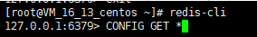

Linux安装redis
下载网址
安装
下载
可选择下载好以后上传服务器，或直接使用命令：
wget http://download.redis.io/releases/redis-5.0.7.tar.gz
解压
tar -zvxf redis-5.0.7.tar.gz
移动redis目录
一般都会将redis目录放置到 /usr/local/redis目录，所以这里输入下面命令将目前在/root目录下的redis-5.0.7文件夹更改目录，同时更改文件夹名称为redis。
mv /root/redis-5.0.7 /usr/local/redis
编译
cd到/usr/local/redis目录，输入命令make执行编译命令，接下来控制台会输出各种编译过程中输出的内容。
make
安装
输入以下命令
make PREFIX=/usr/local/redis install
这里多了一个关键字 PREFIX= 这个关键字的作用是编译的时候用于指定程序存放的路径。比如我们现在就是指定了redis必须存放在/usr/local/redis目录。假设不添加该关键字Linux会将可执行文件存放在/usr/local/bin目录，库文件会存放在/usr/local/lib目录。配置文件会存放在/usr/local/etc目录。其他的资源文件会存放在usr/local/share目录。这里指定号目录也方便后续的卸载，后续直接rm -rf /usr/local/redis 即可删除redis。
启动redis
根据上面的操作已经将redis安装完成了。在目录/usr/local/redis 输入下面命令启动redis
./bin/redis-server& ./redis.conf
上面的启动方式是采取后台进程方式，下面是采取显示启动方式(如在配置文件设置了daemonize属性为yes则跟后台进程方式启动其实一样)。
./bin/redis-server ./redis.conf
两种方式区别无非是有无带符号&的区别。 redis-server 后面是配置文件，目的是根据该配置文件的配置启动redis服务。redis.conf配置文件允许自定义多个配置文件，通过启动时指定读取哪个即可。
配置
redis.conf配置文件
在目录/usr/local/redis下有一个redis.conf的配置文件。我们上面启动方式就是执行了该配置文件的配置运行的。我么可以通过cat、vim、less等Linux内置的读取命令读取该文件。
也可以通过redis-cli命令进入redis控制台后通过CONFIG GET * 的方式读取所有配置项。 如下：
1 | redis-cli |

回车确认后会将所有配置项读取出来，如下图
这里列举下比较重要的配置项
| 配置项名称 | 配置项值范围 | 说明 |
|---|---|---|
| daemonize | yes、no | yes表示启用守护进程，默认是no即不以守护进程方式运行。其中Windows系统下不支持启用守护进程方式运行 |
| port | 指定 Redis 监听端口，默认端口为 6379 | |
| bind | 绑定的主机地址,如果需要设置远程访问则直接将这个属性备注下或者改为bind * 即可,这个属性和下面的protected-mode控制了是否可以远程访问 。 | |
| protected-mode | yes 、no | 保护模式，该模式控制外部网是否可以连接redis服务，默认是yes,所以默认我们外网是无法访问的，如需外网连接rendis服务则需要将此属性改为no。 |
| timeout | 300 | 当客户端闲置多长时间后关闭连接，如果指定为 0，表示关闭该功能 |
| loglevel | debug、verbose、notice、warning | 日志级别，默认为 notice |
| databases | 16 | 设置数据库的数量，默认的数据库是0。整个通过客户端工具可以看得到 |
| rdbcompression | yes、no | 指定存储至本地数据库时是否压缩数据，默认为 yes，Redis 采用 LZF 压缩，如果为了节省 CPU 时间，可以关闭该选项，但会导致数据库文件变的巨大。 |
| dbfilename | dump.rdb | 指定本地数据库文件名，默认值为 dump.rdb |
| dir | 指定本地数据库存放目录 | |
| requirepass | 设置 Redis 连接密码，如果配置了连接密码，客户端在连接 Redis 时需要通过 AUTH |
|
| maxclients | 0 | 设置同一时间最大客户端连接数，默认无限制，Redis 可以同时打开的客户端连接数为 Redis 进程可以打开的最大文件描述符数，如果设置 maxclients 0，表示不作限制。当客户端连接数到达限制时，Redis 会关闭新的连接并向客户端返回 max number of clients reached 错误信息。 |
| maxmemory | XXX |
指定 Redis 最大内存限制，Redis 在启动时会把数据加载到内存中，达到最大内存后，Redis 会先尝试清除已到期或即将到期的 Key，当此方法处理 后，仍然到达最大内存设置，将无法再进行写入操作，但仍然可以进行读取操作。Redis 新的 vm 机制，会把 Key 存放内存，Value 会存放在 swap 区。配置项值范围列里XXX为数值。 |
这里我要将daemonize改为yes，不然我每次启动都得在redis-server命令后面加符号&，不这样操作则只要回到Linux控制台则redis服务会自动关闭，同时也将bind注释，将protected-mode设置为no。
这样启动后我就可以在外网访问了。
查看Redis是否正在运行
1、采取查看进程方式
ps -aux | grep redis
结果如下图：
2、采取端口监听查看方式
netstat -lanp | grep 6379
结果如下图：
redis-cli
redis-cli是连接本地redis服务的一个命令，通过该命令可以连接redis的脚本控制台。如下图
输入exit可以退出redis脚本控制台
关闭运行中的Redis服务
输入redis-cli 进入控制台后输入命令shutdown即可关闭运行中的Redis服务了。如下图:
远程连接不上问题
如下图，已经开放了Redis服务的ip不为127.0.0.1,理论上远程客户端应该可以连接了，而且云服务器的端口号也在安全组里开放了。